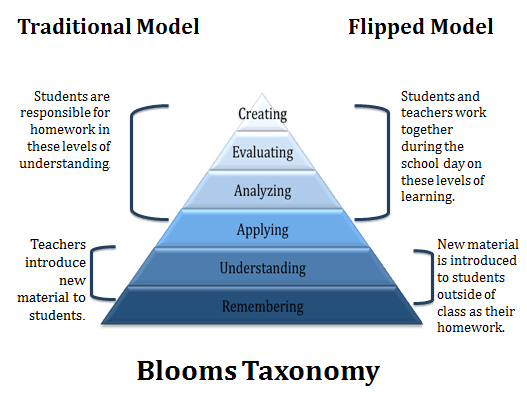

Opportunities
Ahmed (2016) points out how, despite teachers being aware that students do not
understand
the material they are teaching, there is not enough time in a traditional classroom model for
teachers
to assist each student individually in the class period without falling behind schedule. This
teaching
style is teacher-centred, with no differentiation between the way students are taught. As a result,
students are passive learners, with teachers taking control of all responsibility for the students'
learning (Bergmann & Sams, 2014). The flipped classroom learning model directly combats this by
utilising technology to grant the teacher more time to interact with students instead of lecturing.
This
allows for teachers to prioritise creating opportunities for students (Yungwei, 2016) with
“student-centred strategies, approaches, and curricula to provide students with dynamic and
innovative
opportunities for their learning.“ (Brewer, 2018, p. 409). This model of learning has several
benefits
for the student, such as “more one on one time with students, opportunities for active and
collaborative
learning, missed lectures, self-paced learning, and ‘‘just-in-time’’ type instruction” (Roach, 2014,
p.
75). Below is a diagram from Ahemd (2016) detailing the differences between the traditional and
flipped
classroom methods.

The utilisation of the flipped learning model presents students with a plethora of
opportunities throughout their education. Students are able to gain exposure to pre-class materials
through video recordings. This blended learning environment allows for students to gain more control
over how their time is spent, allowing for the student to take responsibility in regards to their
education. This has an added benefit for these students by allowing students who are falling behind
to
rewatch past video recordings (Ahmed, 2016). A survey regarding student engagement performed by
Fisher
et al. (2017) showed that students strongly felt that they were in control of their learning,
crediting
the flipped learning model to this. This model of learning ultimately results in students becoming
more
independent. Students had found that the control they had over their learning and time led to an
overall
positive learning experience. Furthermore, survey participants noted that the ability to control
their
time granted several positive benefits by allowing a greater flexibility in regards to their
timetable,
allowing for the student to better balance their personal and educational lives. Additionally, Cabı
(2018) reported that students autonomously studying and subsequently reaching their academic goals
raised students’ self-confidence. Students ultimately gain control of their education, under this
learning model they are granted a choice in what content they engage in and when (Brewer, 2018). The
control students had over their learning served as training for self-directed learning, allowing for
students to further develop their self-discipline skills (Yungwei, 2016).
Teachers are able to utilise the preparation students perform before the class to then
assist and build off of the knowledge the student possesses. Students are able to get individualised
support as a result of this, getting assistance for the level of knowledge they have (Brewer, 2018).
The
pre-preparation for class also adds to increased teamwork skills, as students won’t spend the entire
class time focusing on learning new material and can instead work with their peers more effectively
and
enhance both of their understandings on the given topic (Du et al., 2014). Yungwei (2016) brings
attention to how the lack of formal lectures allows for students to discuss opinions with one
another,
with Ahmed (2016) adding to this my mentioning that the flipped classroom model lengthens the amount
of
time students can interact with their peers as well as with their teachers. This promotes
inquiry-based
learning, as students are able to more directly ask questions and get responses.
The use of electronics in flipped classrooms grants students the opportunities to learn
anywhere and at any time. Fisher et al. (2017) points out that with this advantage, students who are
under time constraints are able to use their mobile devices to access and engage in course material
anywhere, allowing for them to increase their time management skills. This allows for remote
learning to
occur if the individual is ill or otherwise unable to arrive to class (Birgili et al., 2021).
Another
advantage with the implementation of technology that Du et al. (2014) elaborates on is the use to
rewatch videos repeatedly. They point out that students in a traditional classroom may struggle to
transcribe the information given to them from a teacher, however, with the use of video, students
are
able to freely rewind and fast-forwards when necessary. Birgili et al. (2021) makes an interesting
point
regarding the benefit of utilising technology in this learning model, as using videos to teach
Generation Z can increase the appeal and efficiency of learning. They also mention how visual ads
“help
students to have an integral outlook as well as increase their commitment to the class and enhance
their
ability to transfer acquired knowledge to other topics” (p. 386).
Flipped classrooms' biggest strength is its personalisation. Students are able to adjust
the
way they learn to meet their needs, such as if they have a preference for being in an auditory or
visual
medium and if they perform better in the morning or afternoon. Every student has an individual
learning
style and a flipped classroom is able to more adequately cater to that (Ahmed, 2016). This model of
learning encourages students to develop their critical thinking, collaboration, communications
(Brewer,
2018) and problem-solving skills (Birgili et al., 2021), as well as encouraging “social interaction,
teamwork and cultural diversity among students” (Du et al., 2014, p. 18) by requiring students to
collaborate with one another. Flipped learning allows for a personalised education to fit each
individual student's needs, granting each student the opportunity to learn at a pace that suits them
and
ultimately results in students “engaging with content, engaging with their classmates, and taking
control over their own learning” (Ahmed, 2016, p.432).